Wanneer mag je weer geven?
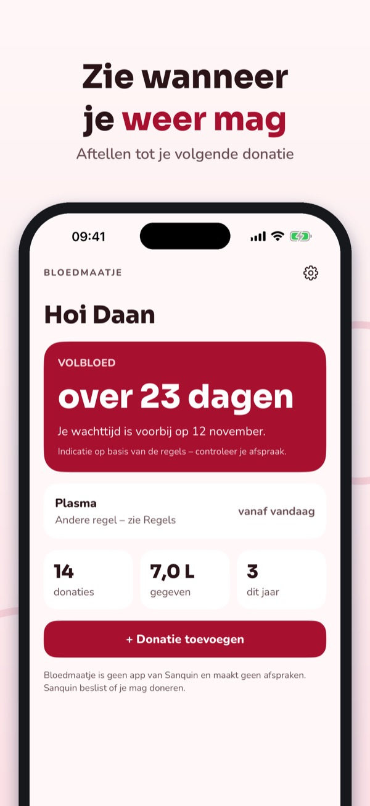
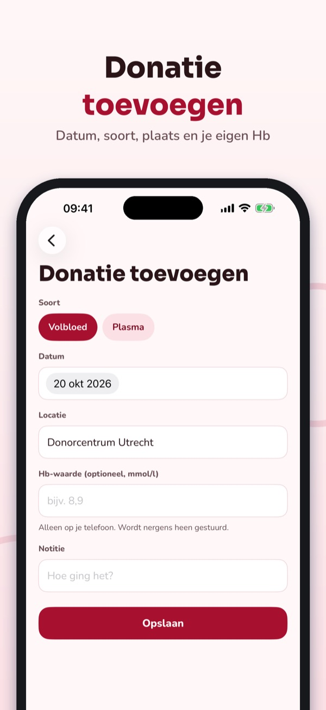
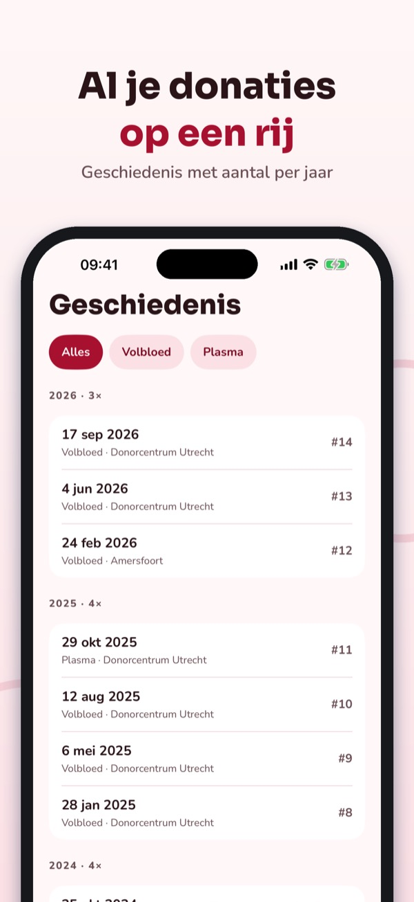
Bloedmaatje houdt je donaties bij en laat zien wanneer je weer mag geven.
Bijhouden, aftellen, herinnering, geschiedenis en mijlpalen kun je gebruiken zonder aankoop. Bloedmaatje Plus is een eenmalige aankoop voor widget, statistiek en het Hb-logboek. Geen abonnement.
Bloedmaatje geeft geen medisch advies en beslist niet of je mag doneren; dat doet de bloedbank. De app is onafhankelijk, niet verbonden aan Sanquin en maakt geen afspraken. Je Hb-waarden blijven op je telefoon.
Terms of Use (EULA): https://www.apple.com/legal/internet-services/itunes/dev/stdeula/
Privacy: https://baytechbv.github.io/privacy/bloeddonor-nl/
Blood donation tracker
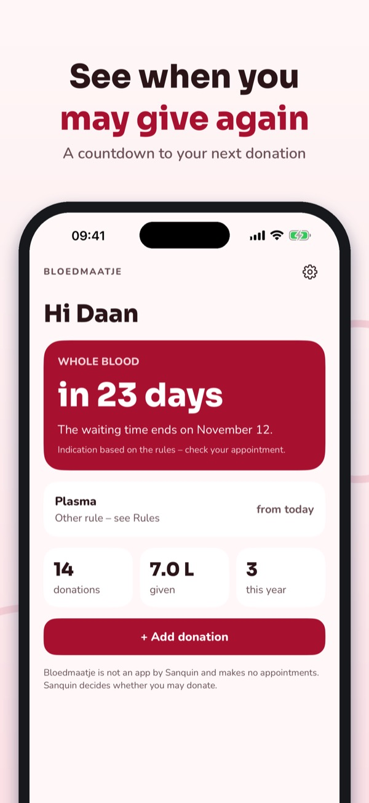
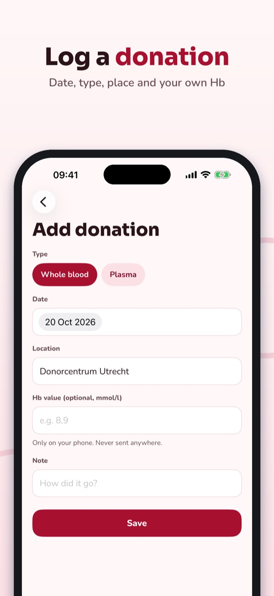
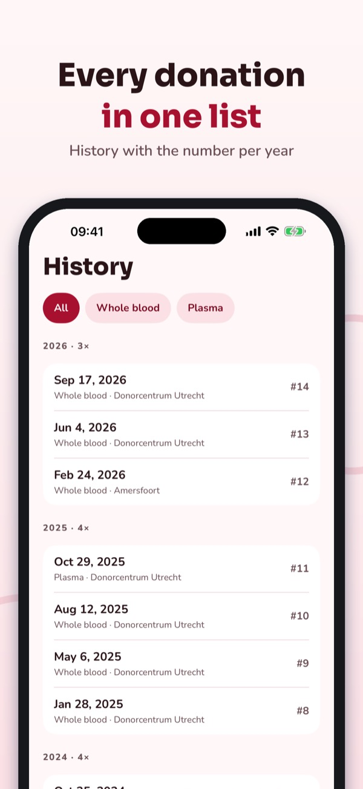
Bloedmaatje keeps track of your donations and shows when you may give again.
Logging, countdown, reminder, history and milestones can be used without a purchase. Bloedmaatje Plus is a one-time purchase for the widget, statistics and the Hb log. No subscription.
Bloedmaatje gives no medical advice and does not decide whether you may donate; your blood service does. The app is independent, not affiliated with Sanquin or any blood service, and does not book appointments. Your Hb values stay on your phone.
Terms of Use (EULA): https://www.apple.com/legal/internet-services/itunes/dev/stdeula/
Privacy: https://baytechbv.github.io/privacy/bloeddonor-nl/
Logga dina blodgivningar
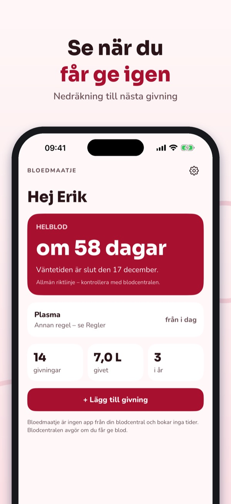
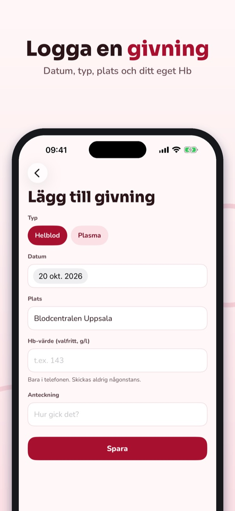
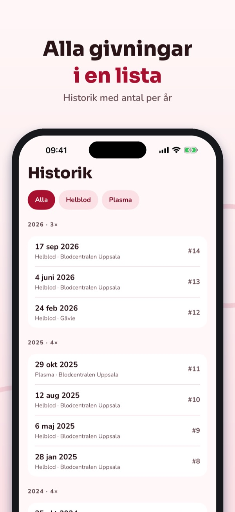
Bloedmaatje håller koll på dina givningar och visar när du får ge blod igen.
Logg, nedräkning, påminnelse, historik och milstolpar kan användas utan köp. Bloedmaatje Plus är ett engångsköp för widget, statistik och Hb-logg. Ingen prenumeration.
Bloedmaatje ger inga medicinska råd och avgör inte om du får ge blod; det gör blodcentralen. Appen är fristående, inte kopplad till någon blodcentral, och bokar inga tider. Dina Hb-värden stannar i telefonen.
Terms of Use (EULA): https://www.apple.com/legal/internet-services/itunes/dev/stdeula/
Privacy: https://baytechbv.github.io/privacy/bloeddonor-nl/
Logg blodgivningene dine
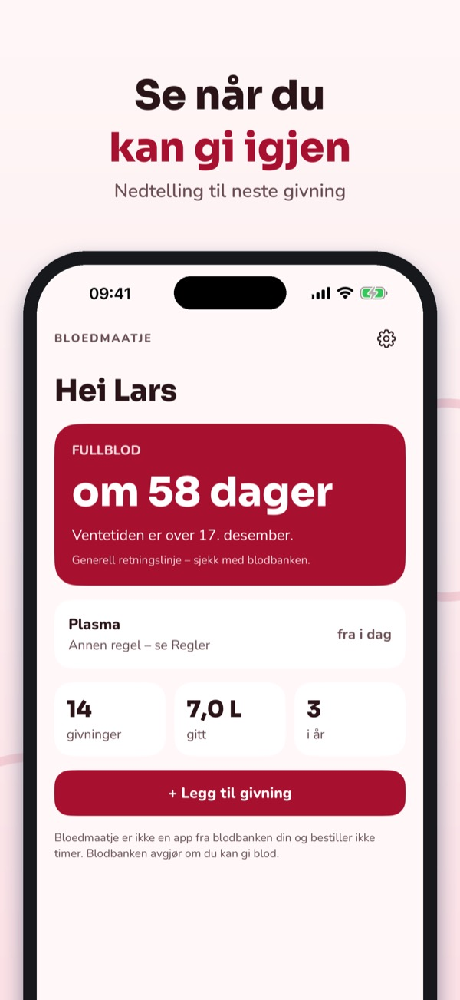
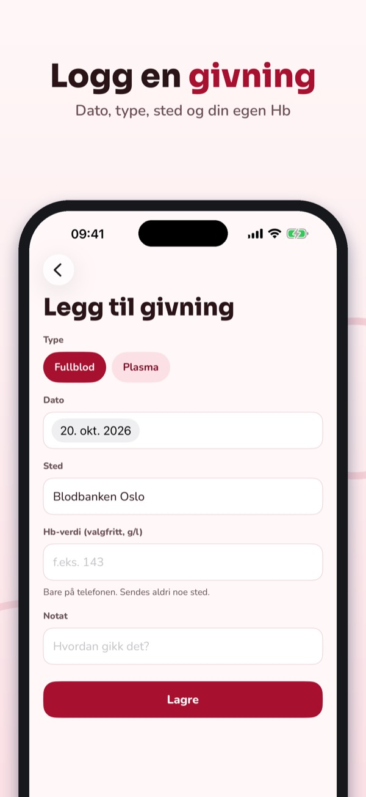
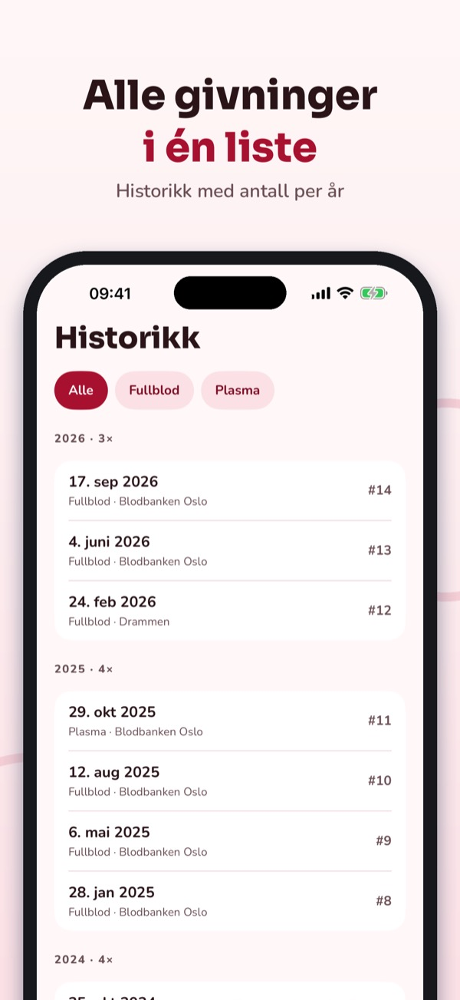
Bloedmaatje holder oversikt over givningene dine og viser når du kan gi blod igjen.
Logg, nedtelling, påminnelse, historikk og milepæler kan brukes uten kjøp. Bloedmaatje Plus er et engangskjøp for widget, statistikk og Hb-logg. Ingen abonnement.
Bloedmaatje gir ingen medisinske råd og avgjør ikke om du kan gi blod; det gjør blodbanken. Appen er uavhengig, ikke tilknyttet noen blodbank, og bestiller ikke timer. Hb-verdiene dine blir på telefonen.
Terms of Use (EULA): https://www.apple.com/legal/internet-services/itunes/dev/stdeula/
Privacy: https://baytechbv.github.io/privacy/bloeddonor-nl/
Log dine bloddonationer
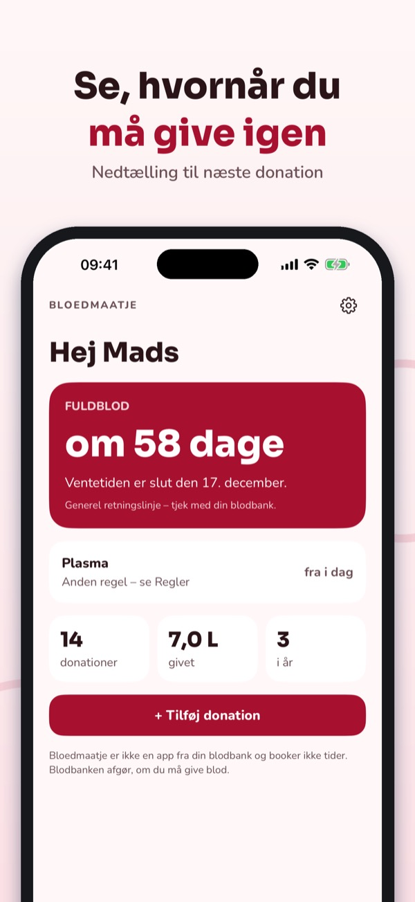
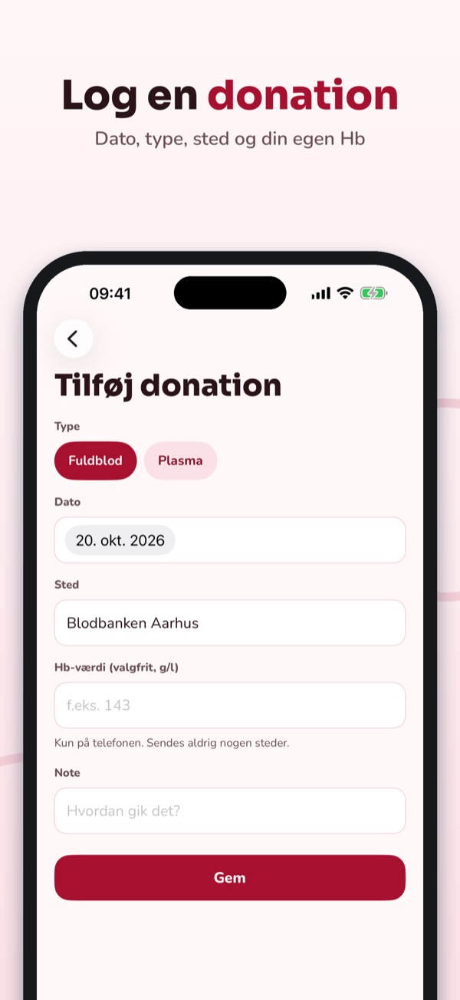
Bloedmaatje holder styr på dine donationer og viser, hvornår du må give blod igen.
Log, nedtælling, påmindelse, historik og milepæle kan bruges uden køb. Bloedmaatje Plus er et engangskøb til widget, statistik og Hb-log. Intet abonnement.
Bloedmaatje giver ingen medicinske råd og afgør ikke, om du må give blod; det gør blodbanken. Appen er uafhængig, ikke tilknyttet nogen blodbank og booker ikke tider. Dine Hb-værdier bliver på telefonen.
Terms of Use (EULA): https://www.apple.com/legal/internet-services/itunes/dev/stdeula/
Privacy: https://baytechbv.github.io/privacy/bloeddonor-nl/
Seuraa luovutuksiasi
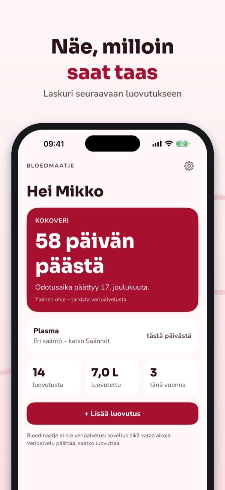
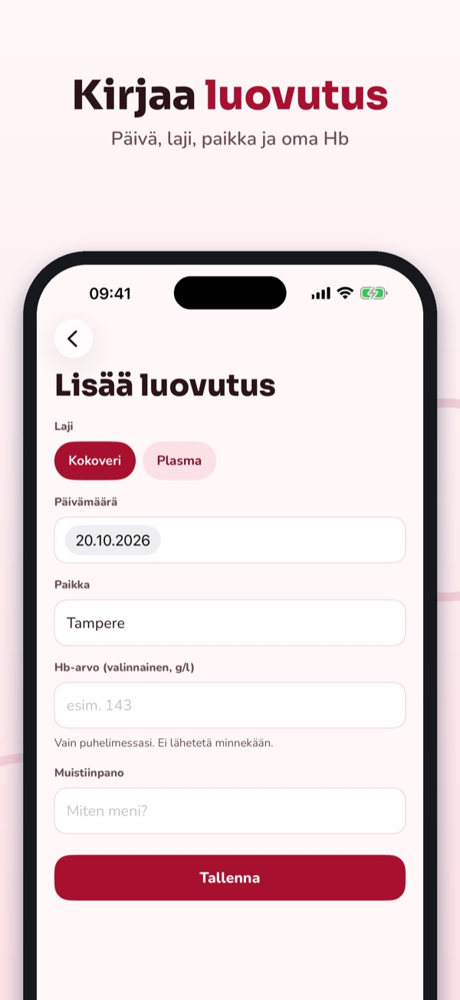
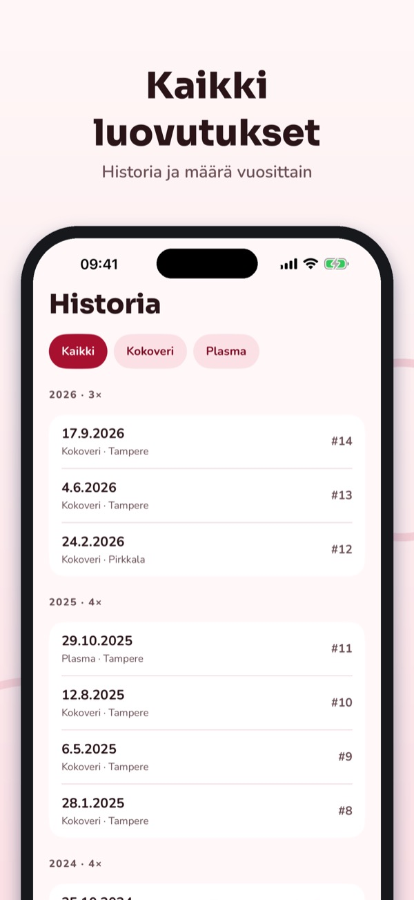
Bloedmaatje pitää kirjaa luovutuksistasi ja näyttää, milloin voit luovuttaa verta taas.
Kirjaus, lähtölaskenta, muistutus, historia ja virstanpylväät ovat käytettävissä ilman ostoa. Bloedmaatje Plus on kertaosto widgetille, tilastoille ja Hb-lokille. Ei tilausta.
Bloedmaatje ei anna lääketieteellisiä neuvoja eikä päätä, saatko luovuttaa; sen päättää veripalvelu. Sovellus on itsenäinen, ei liity mihinkään veripalveluun eikä varaa aikoja. Hb-arvosi pysyvät puhelimessa.
Terms of Use (EULA): https://www.apple.com/legal/internet-services/itunes/dev/stdeula/
Privacy: https://baytechbv.github.io/privacy/bloeddonor-nl/